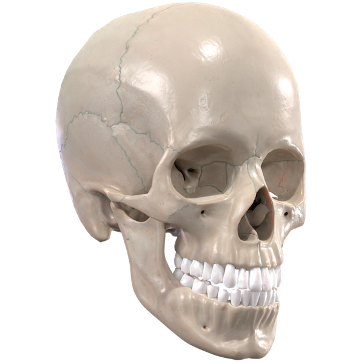

European Journal of STEM Education Publishes Study on VR Learning
Oct 27, 2025 • Research

The European Journal of STEM Education has published a comprehensive study investigating the impact of immersive VR on medical student performance. The research specifically utilized Human Anatomy VR by Medicurate Surgical as the primary learning tool.
Key findings from the study include:
- 92% Comprehension Rate: Students using VR reported a significantly higher understanding of complex spatial relationships in the pelvic and cranial regions.
- Retention Boost: Long-term memory retention of anatomical landmarks was 30% higher than the control group using traditional cadavers and textbooks.
- Engagement: Study participants spent an average of 45% more time interacting with the curriculum when allowed to use VR headsets.
"The results validate our mission to modernize healthcare education," said the Research Lead. "VR is no longer a luxury tool; it is becoming a foundational necessity for the next generation of physicians."
Medicurate Surgical is committed to ongoing academic research to ensure our tools provide the highest educational value.